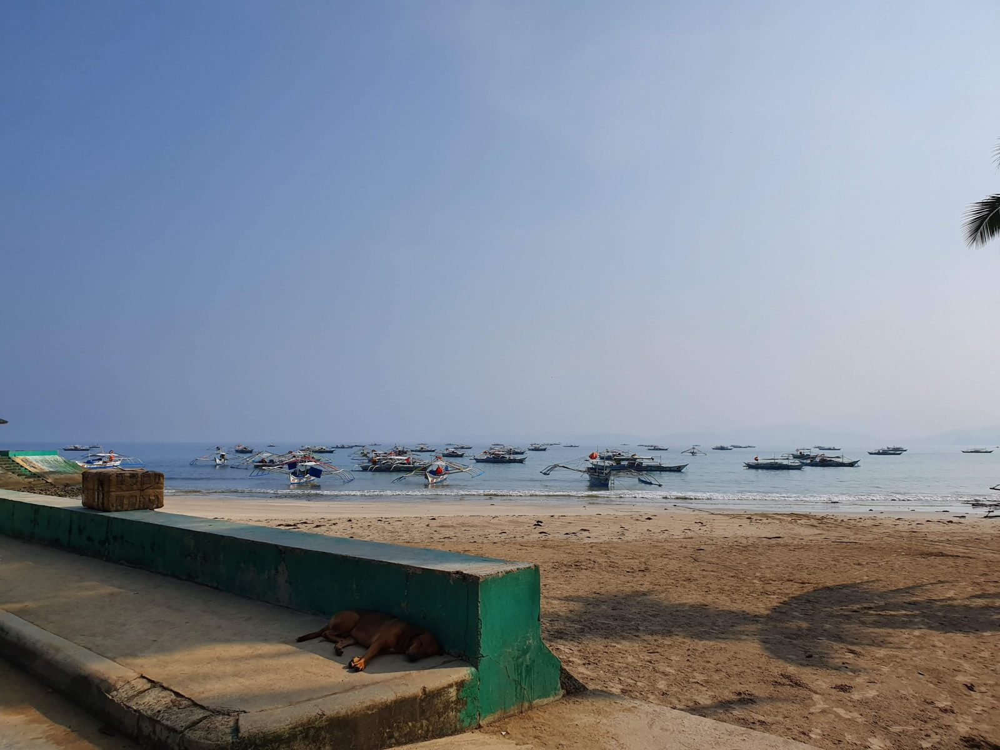
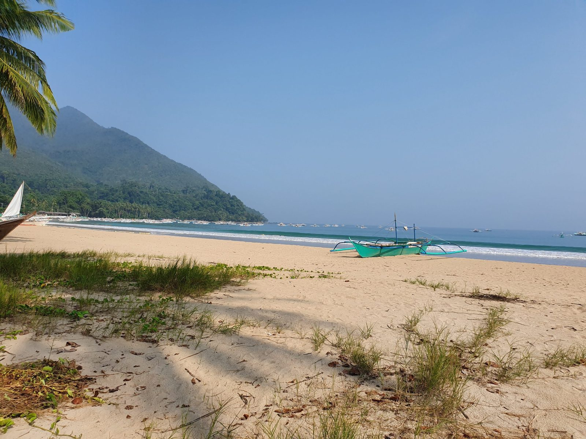
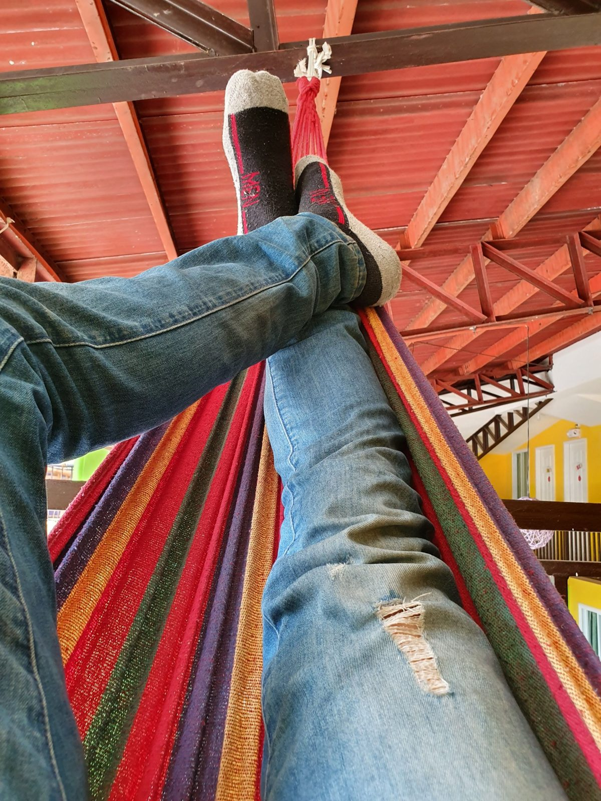
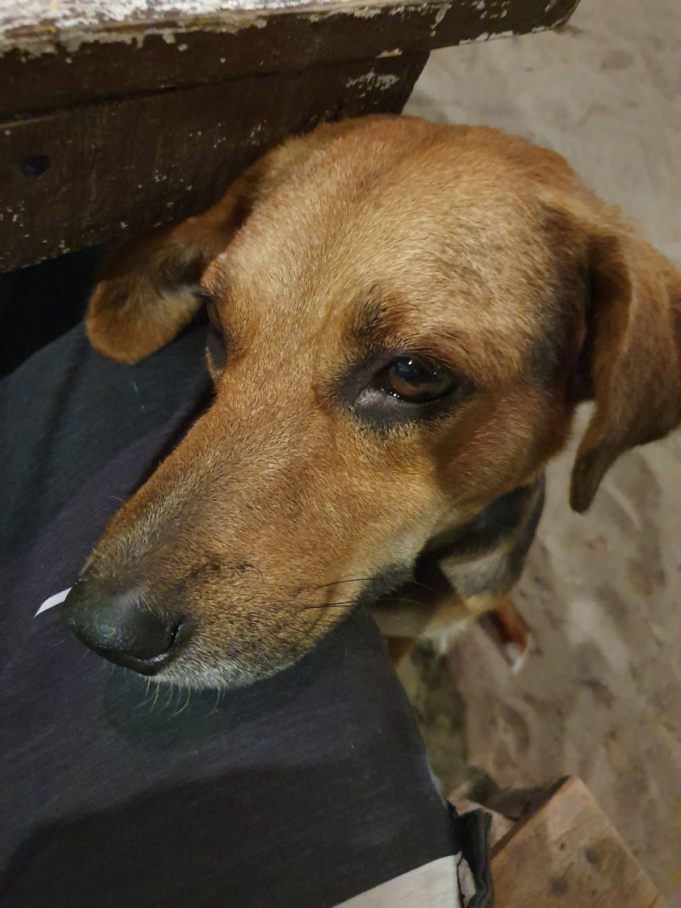
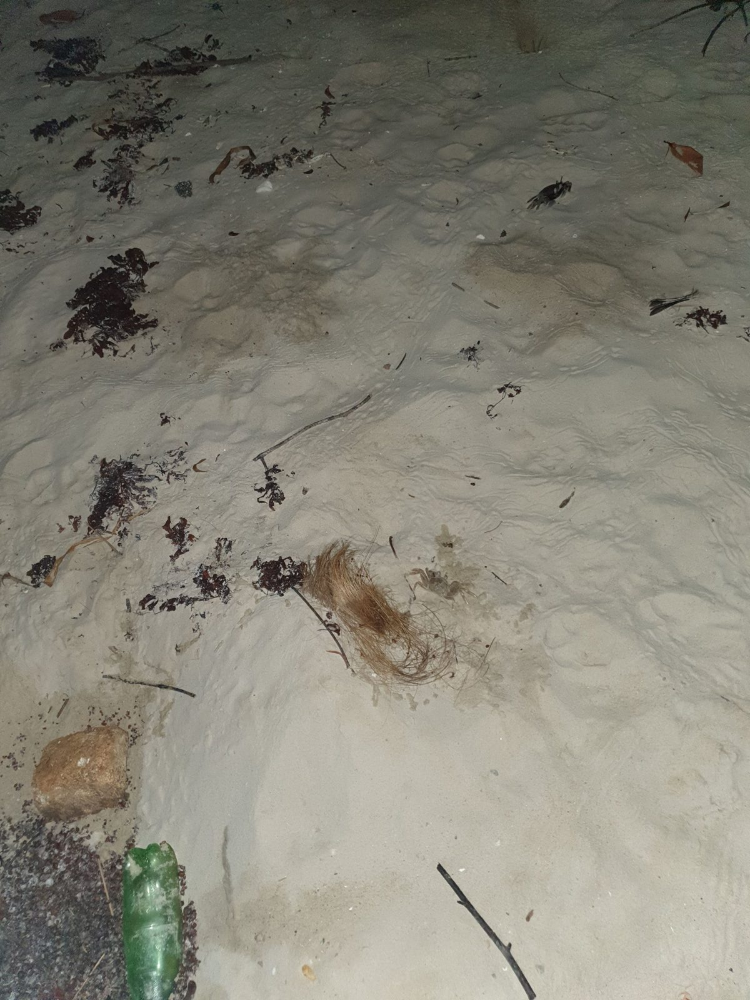

Diary · Southeast Asia · Philippines · Sabang to Port Barton
Sabang to Port Barton, September 23, 2019
On September 23, 2019 I left the Sabang area, rode my scooter back to the hostel near the airport in Puerto Princesa, returned it, and took a bus to Port Barton, a small village on the other side of Palawan. I slept there that night. The night before I had slept near Sabang.
In short: a travel day with long gaps. I have photos from the morning, from noon and from the evening, and none from the bus. I do not remember the time it left, where I boarded or what it cost, and I say so. The times are my phone's clock, shown by Google Photos in GMT+08:00. The places are Google Photos' pins, and I say where one is an estimate. I leave out the faces of people I did not know and the videos with people.
- By car: Google Maps shows 146 km and about 3 hours 3 minutes from Puerto Princesa Airport to Port Barton, via the Puerto Princesa North Road.
- By bus or van: the services leave from the San Jose bus terminal, about 15 minutes from the airport. A tricycle there costs about 120 pesos and a multicab 12 pesos from the junction, as one ticket site describes it. The same site says a van takes about 3 hours for roughly 400 to 550 pesos and a bus about 4 hours for roughly 300 pesos.
- Timetables: the sources disagree about bus departure times, so I do not give one.
- My own 2019 prices: I do not remember any, so I give none.
The sources are in the box at the end. These things change, so check before you go.
The morning in Sabang
My first photos of the day are from 08:31, on the beach at Sabang. Google Photos' pin is at Sabang Beach. I photographed the bay with dozens of fishing boats at anchor, and a dog asleep in the shade of a green concrete wall.

At 08:36 I took a wide photo of the beach: empty sand, a green outrigger boat at the water, and a steep green mountain behind the bay.

Noon: back near the airport
By 12:23 I was in a hammock at the hostel near the airport. Google Photos' pin for these photos is in Puerto Princesa City, near the airport, in the area of Rizal Avenue. I came back by scooter, and I returned it to the hostel. Google Maps showed about 70 km and about 1 hour 30 minutes by car between the city and Sabang when I checked in November 2026, and I did not check the exact distance from the hostel. I do not remember how long the ride took me or when I left Sabang.
I have two selfies from the hammock, at 12:23, and one photo from 12:30 of my legs in jeans, crossed in the hammock under a red roof. I show only the one without my face.

The bus
I took a bus to Port Barton. I have no photo of the bus or the station, so I do not know the time it left, where I got on or what the ticket cost. What my photos do show is that I was at the hostel at 12:30 and in Port Barton at 18:37, so the trip fit between those two times. The distances and times above are today's, not the ones I experienced.
The evening in Port Barton
My first photo in Port Barton is from 18:37, and Google Photos' pin for it is in the center of the village, in San Vicente, Port Barton. I slept in a hostel that was not far from the beach. There was no special meal or evening there that I remember.
I took two close-ups of dogs at 18:37 and 19:12. I think this was at a restaurant, and I do not remember whether they belonged to it or to nobody. One was brown with a gentle look, resting its head against my leg.

At 19:24 I photographed the sand at night: seaweed, a coconut husk, a green bottle and a small crab walking.

- By car: Google Maps, Puerto Princesa Airport to Port Barton: 146 km, about 3 hours 3 minutes, checked in November 2026.
- The terminal and the prices: 12Go, Puerto Princesa to Port Barton lists the San Jose terminal, the tricycle and multicab fares, a van at about 400 to 550 pesos in about 3 hours and a bus at about 300 pesos in about 4 hours. Another page on the same site lists one bus a day at 8:45, and a third lists a bus at 14:30, so the sources disagree.
- Travel time: Rome2Rio lists a minivan at about 4 hours and a drive of about 2 hours 16 minutes.
- What I did not find: the 2019 timetable and any 2019 price, because I do not remember them and I have no tickets.
These are prices and notes as listed today, not what I paid.
What I do not remember
I do not remember when I left Sabang, how long the scooter ride took, the name of the hostel near the airport, what I paid for the bus, where I boarded it, when it left, where I got off or how I got from there to the hostel in Port Barton. I also do not remember the name of the hostel I slept in there, and I do not give it.